练前须知
这是一份内容整理，不是个体化诊断或处方
急性外伤、术后、明显肿胀、关节锁住、反复打软腿或不能负重时，不要直接照练，应先接受医生或物理治疗师评估。AI 示意图若与真实视频或专业指导冲突，以真实动作和专业评估为准。
立即停止：出现锐痛、卡住、打软腿、明显肿胀，或症状在第二天持续恶化。
三阶段总览
先看全局，再进入单个动作
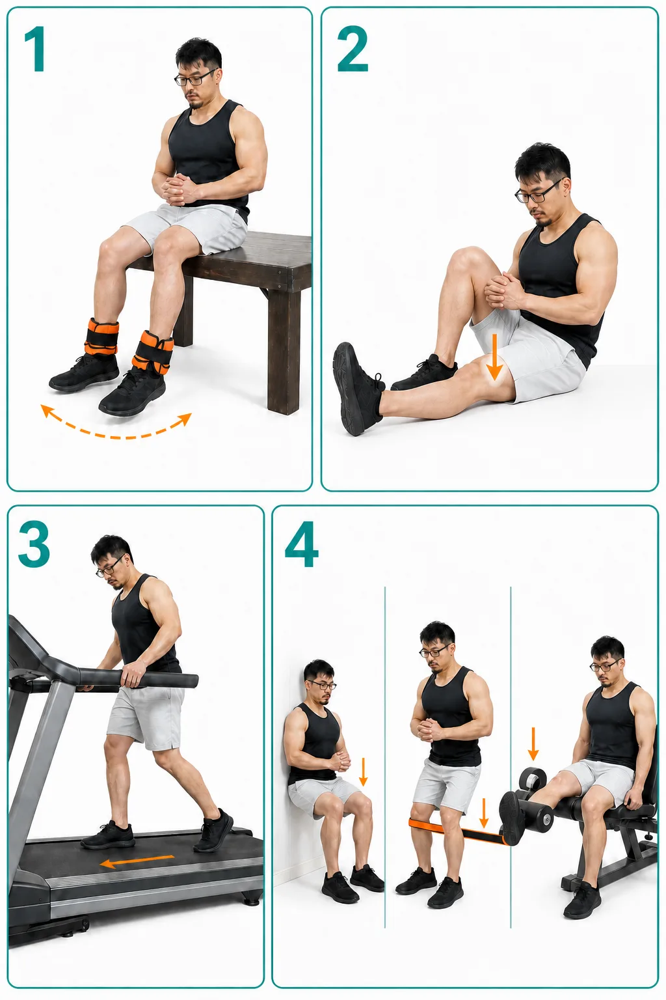
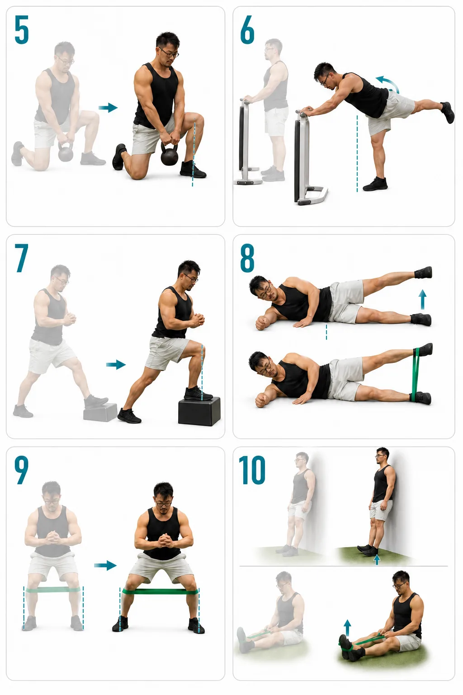
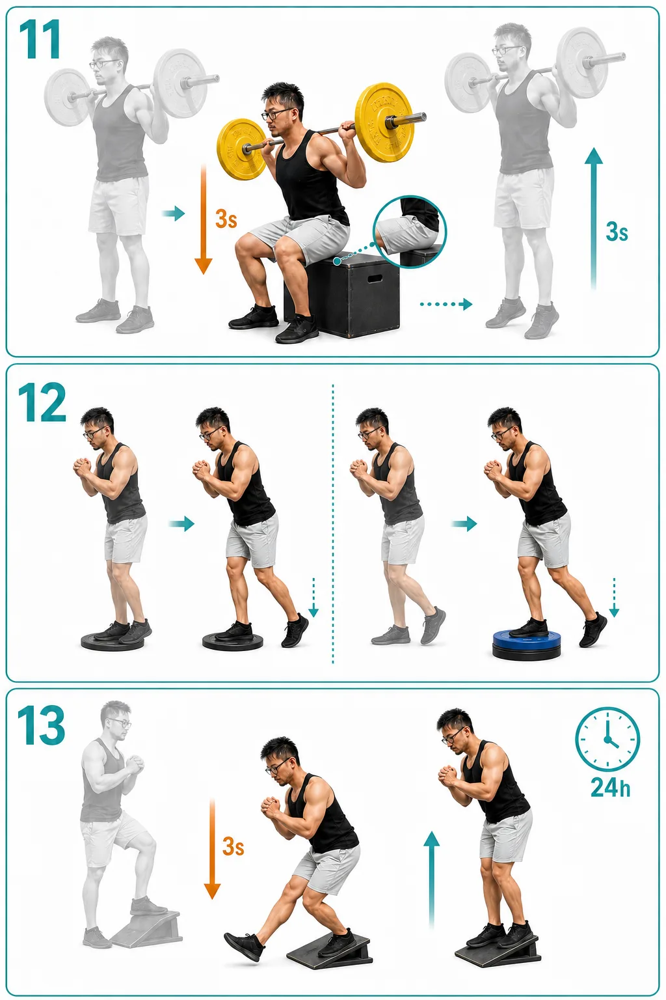
疼痛明显时从这里开始
恢复伸直与股四头肌耐受
优先找回膝关节伸直、降低刺激，并用等长收缩维持肌肉输出。
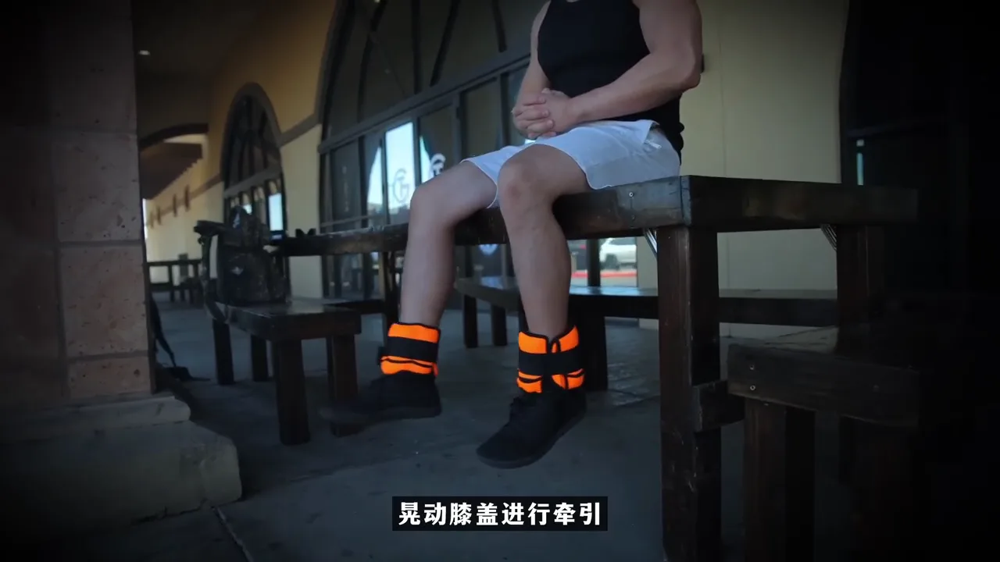
动作 01
膝关节牵引
每天 2–3 次每次 3–5 分钟
- 坐在高凳边缘，小腿完全悬空，脚踝绑负重。
- 让重量被动向下牵引，可做幅度很小的自然晃动。
- 不要主动反复伸膝，也不要未经评估直接从大重量开始。
视频称 5 kg 以下意义不大，但这不是通用医学标准；初始重量应根据个人耐受调整。
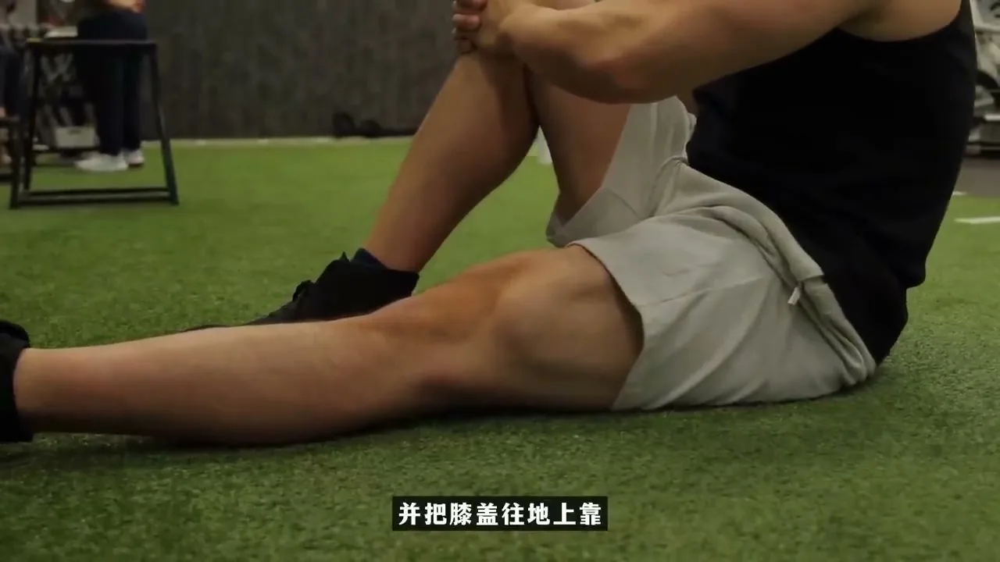
动作 02
股四头肌收缩／恢复伸直
每天至少 5 组每组 10–12 次 · 每次保持 10 秒
- 坐在地面，一腿弯曲，训练腿向前伸直，脚尖始终朝上。
- 收紧大腿前侧，让膝后侧轻轻向地面靠近。
- 太难时在膝下垫毛巾；进阶可垫高脚跟或加入弹力带。
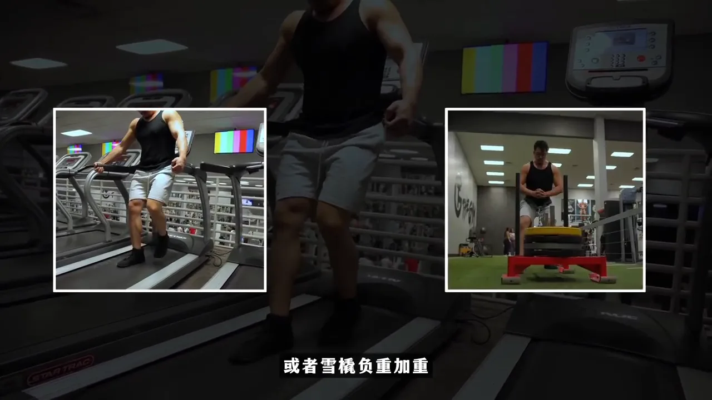
动作 03
反向行走
徒手每天 10 分钟负重 4–5 组 · 至大腿轻微酸
- 使用未开机的跑步机，双手轻扶，以短步、受控方式倒走。
- 也可以向后拖雪橇；不要在运行中的跑步机上第一次尝试。
- 退阶可在泳池中倒走；进阶时逐渐增加步幅或雪橇重量。
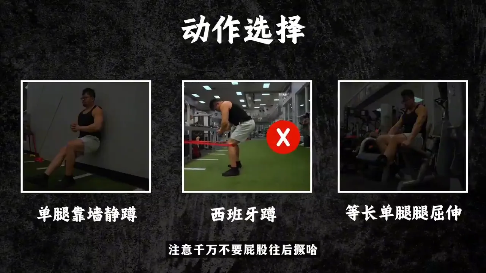
动作 04
膝伸肌等长训练（三选一）
每天 2 次 · 每次 3–5 组保持 45–60 秒 · 休息 2–3 分钟
- 单腿靠墙静蹲：背贴墙；疼痛时先减少下蹲深度。
- 西班牙蹲：弹力带绕过膝后，躯干直立，不要做成髋铰链。
- 腿屈伸保持：用器械或瑜伽球提供阻力，在舒适角度静止。
症状稳定后加入
髋踝活动度与稳定肌
改善髋内外旋、踝背屈以及髋外展控制，减少膝关节代偿。
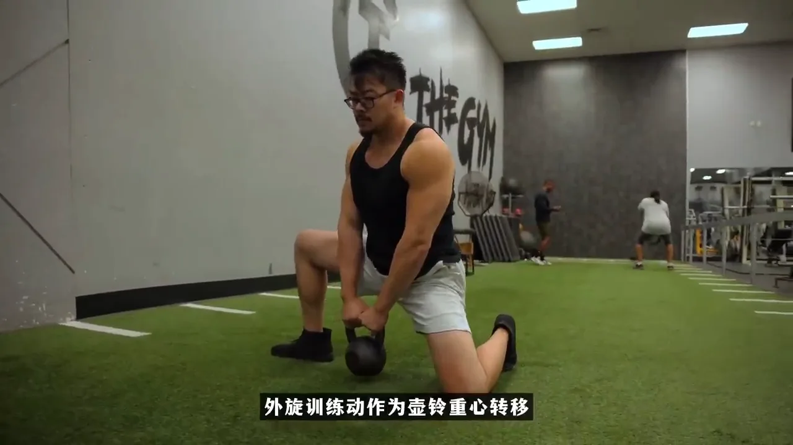
动作 05
半跪壶铃重心转移（髋外旋）
每天练习每组 5 次 · 每次停留 5–10 秒
- 半跪姿，前侧支撑腿为主要拉伸腿，双手持壶铃。
- 胸口保持直立，重心缓慢向前移动。
- 前膝沿第二脚趾方向超过脚尖，不要向内塌。
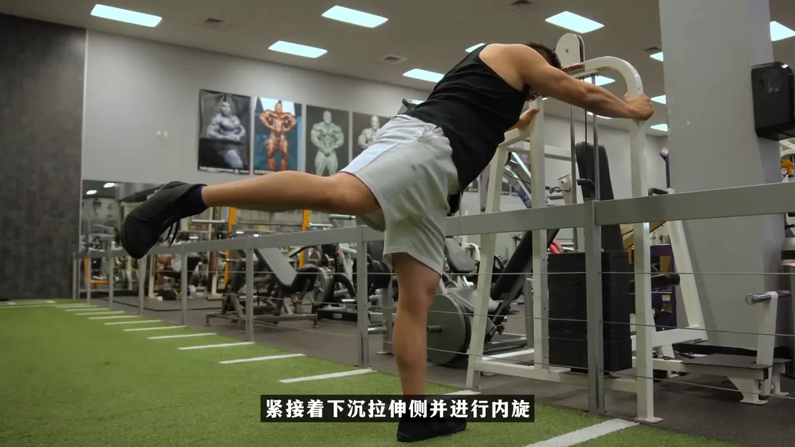
动作 06
髋关节飞机式（髋内旋控制）
每天练习每组 5 次 · 每次停留 5–10 秒
- 手扶稳定物体，支撑腿微屈，做单腿硬拉式髋铰链。
- 从髋关节转动骨盆，动作慢而可控。
- 支撑膝始终对准脚尖，不要靠膝盖旋转代偿。
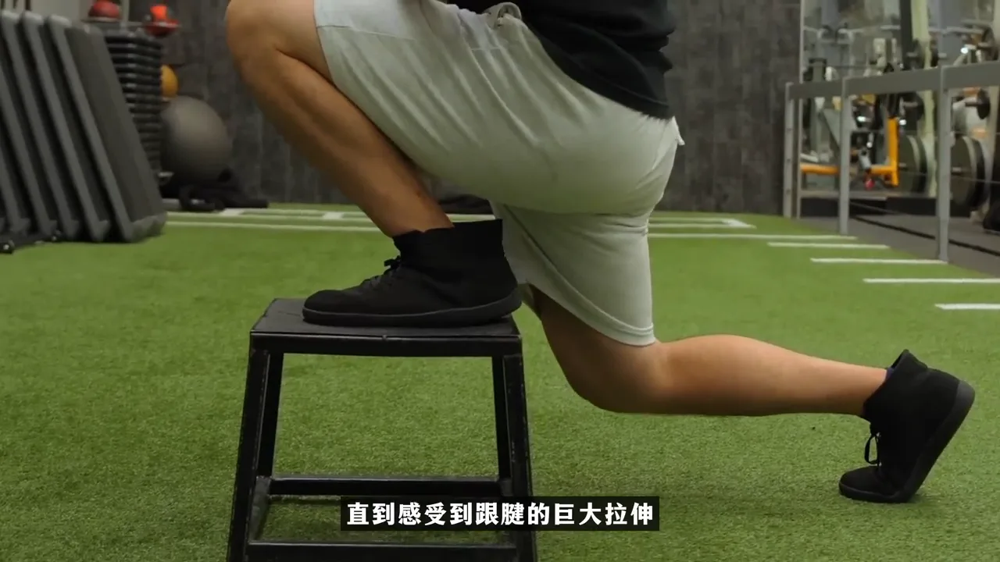
动作 07
踝背屈活动度
每天练习每组 5 次 · 每次停留 5–10 秒
- 整只脚踩在凳子或低台上，脚跟保持贴住支撑面。
- 膝盖沿脚尖方向缓慢前移，直到小腿后侧或跟腱出现拉伸感。
- 不要让足弓塌陷，也不要让膝盖向内扣。
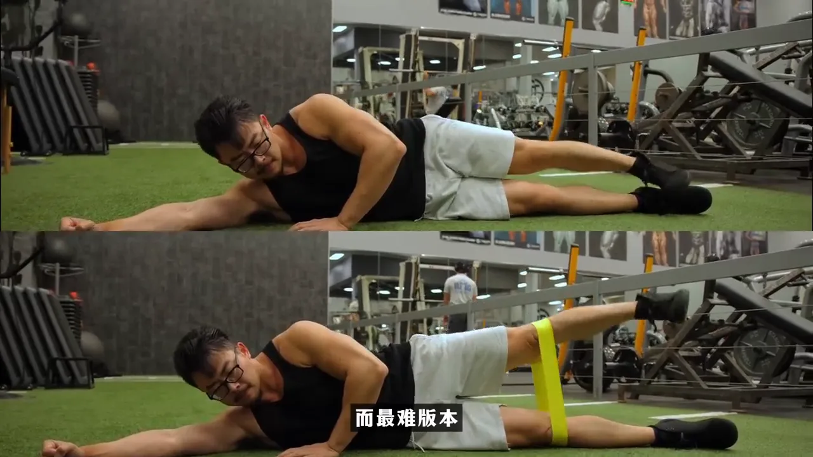
动作 08
侧卧髋外展
每周 2 次每次 3–4 组 × 12–15 次
- 侧卧并保持骨盆上下叠放，上侧腿伸直、脚尖朝前。
- 从髋部抬腿，不要向后翻身或把脚尖转向天花板。
- 进阶顺序：徒手 → 弹力带 → 侧平板支撑加弹力带外展。
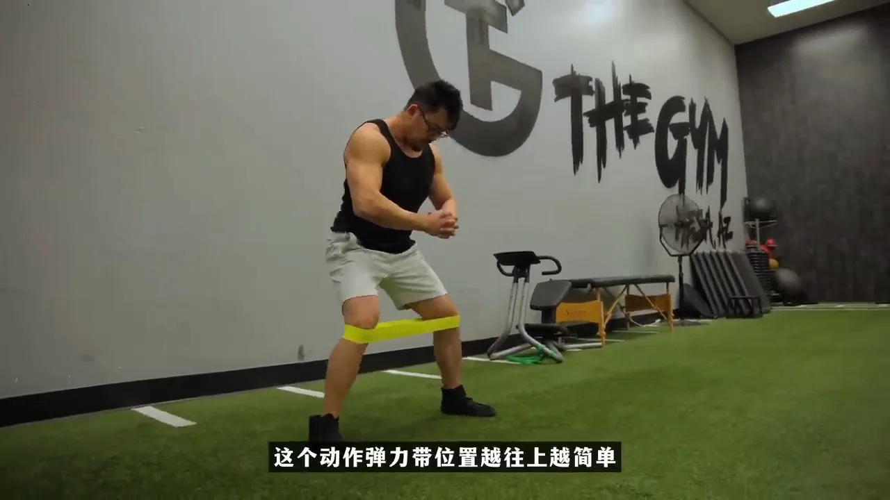
动作 09
弹力带侧向行走
每周 2 次每次 3–4 组 × 12–15 次
- 保持浅蹲，骨盆稳定，双脚朝前，膝盖与脚尖同向。
- 向侧面迈小步，后脚跟进但不要让弹力带完全松弛。
- 弹力带越靠上越简单，越靠近脚踝越难。
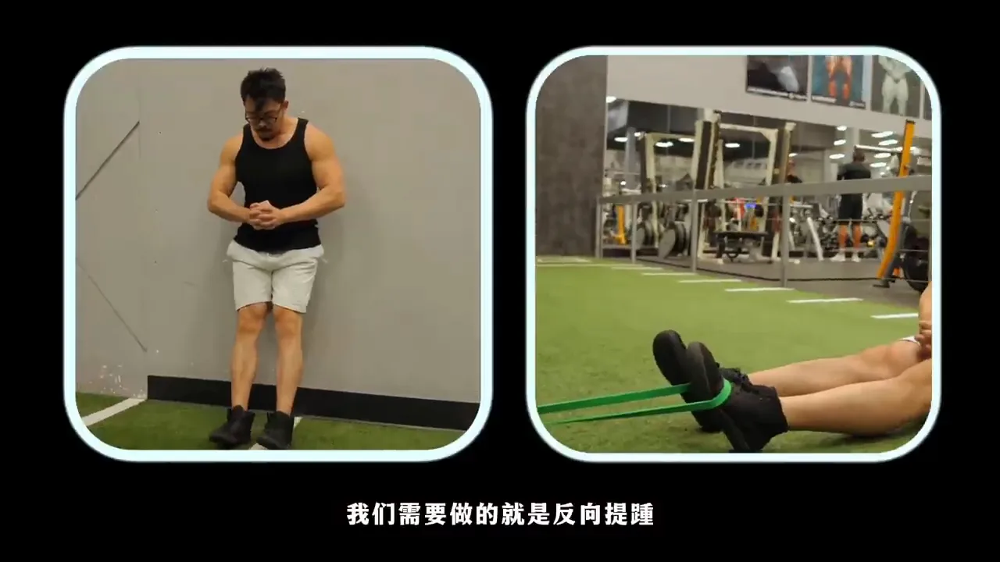
动作 10
反向提踵／胫骨前肌训练
每天练习2–3 组 × 20 次
- 站姿：背靠墙，脚跟留在地面，脚尖抬向小腿。
- 坐姿：用弹力带提供向下阻力，再把脚背勾起。
- 缓慢抬起和放下，不要依靠身体摆动。
日常活动稳定后逐步加入
力量重建与负荷监测
用慢速力量动作逐渐提高耐受，并依据 24 小时反应调整训练量。
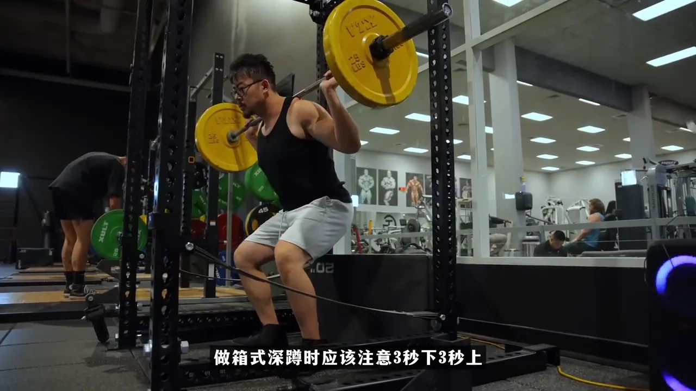
动作 11
慢速箱式深蹲
每周 2 次每次 4 组 × 10–15 次
- 双脚稳定，膝盖对准脚尖；用 3 秒缓慢下降，轻触箱子。
- 不要弹坐、完全卸力或向后摇摆，再用 3 秒受控站起。
- 先徒手或轻重量掌握节奏，再逐渐增加负荷。
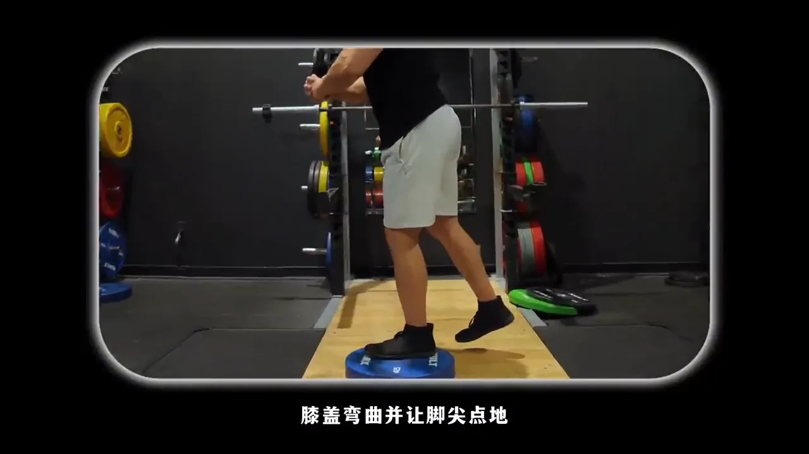
动作 12
单腿脚趾点地
每周 2 次每次 4–5 组 × 10–15 次
- 支撑脚踩在低杠铃片或踏板中央，另一脚悬空。
- 上身仅轻微前倾且不扭转；支撑膝沿脚尖方向弯曲。
- 进阶时提高支撑脚高度，逐渐增加支撑膝弯曲幅度。
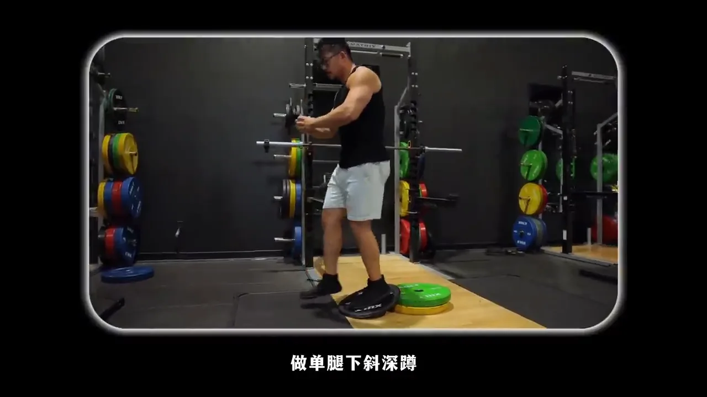
动作 13 · 测试
单腿下斜深蹲测试
训练前测试一次训练后 24 小时用同样方式复测
- 单腿踩在斜板上，只做缓慢下降。
- 站起时让另一脚落地，双脚共同发力，避免把测试做成额外训练。
- 如果疼痛比训练前明显增加，下次降低重量、组数、活动幅度或改用退阶动作。
来源与说明
继续查看原始内容
本页根据北美运动学博士 Bruce 的膝盖恢复视频整理。动作名称、顺序和剂量以视频内容为基础；页面中的中文解释用于帮助快速练习，不替代医学诊断。